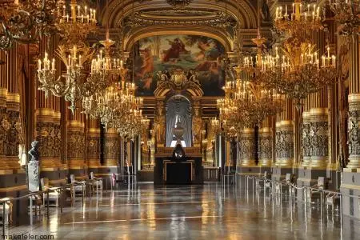

Što je barok?
Barok je umjetnički stil koji se razvio u Europi krajem 16. stoljeća i trajao sve do sredine 18. stoljeća. Ime „barok” potječe od portugalske riječi barroco, što znači „nepravilni biser” – metafora koja savršeno opisuje raskoš i dramatičnost tog razdoblja. kao reakcija na protestantsku reformaciju. Katolička crkva pokreće protureformaciju, a umjetnost postaje sredstvo komunikacije vjere i moći. Vladari i crkva koriste barok da bi pokazali bogatstvo, moć i božanski autoritet.
